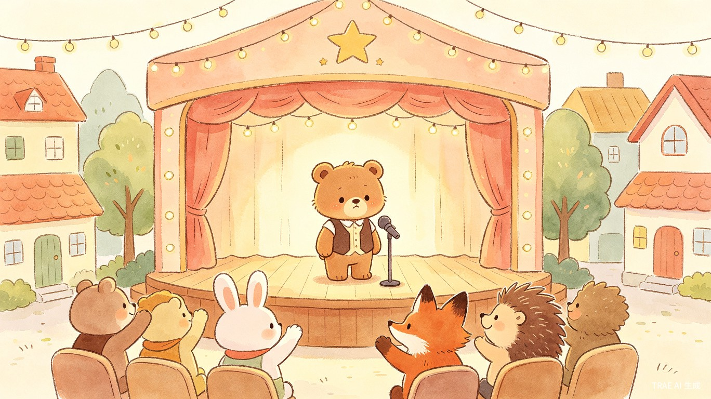
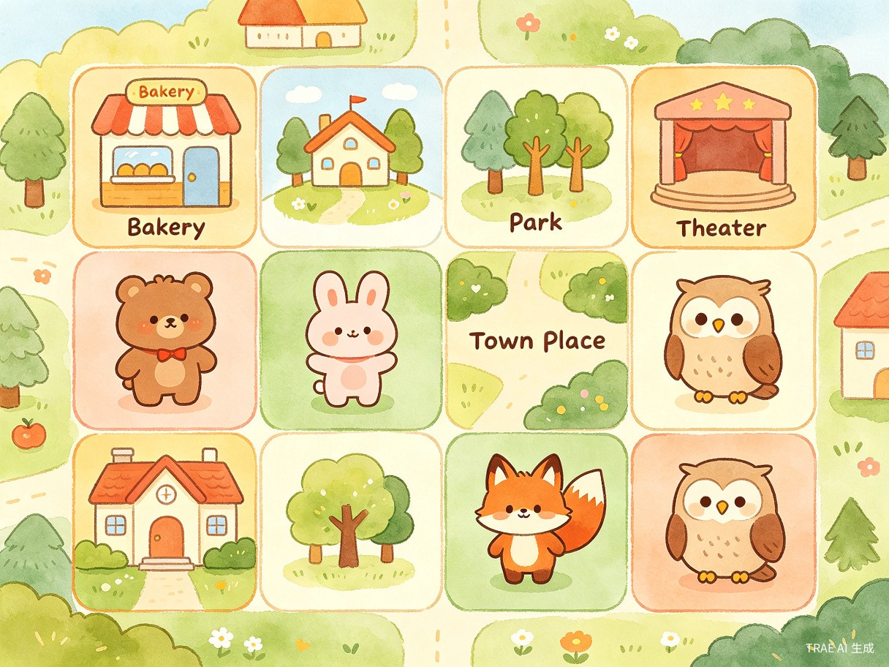
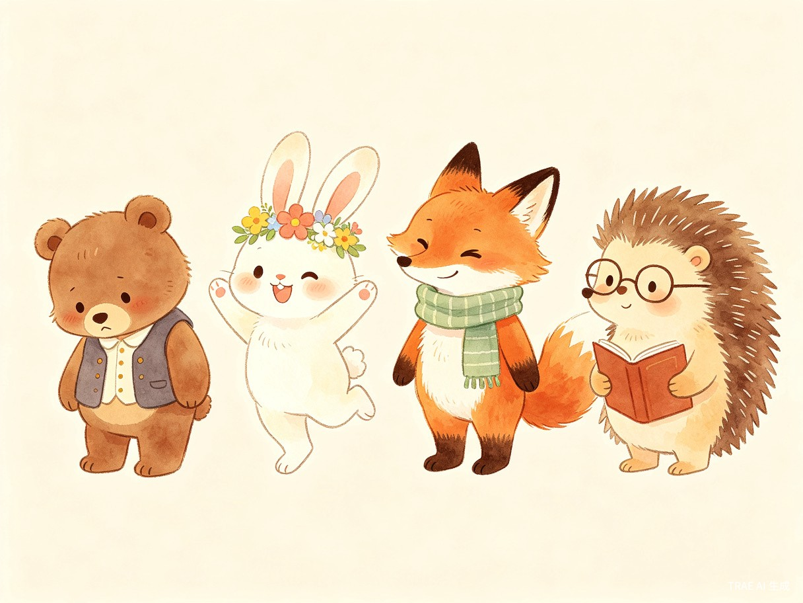

一款 2D 卡通手绘风格的 AI 剧情编排游戏。扮演小镇剧场的导演兼编剧，拖拽角色、触发互动、AI 实时生成温馨剧情。
让每一个普通人都能成为故事的导演
《小镇导演》是一款 2D 卡通手绘风格 的 AI 剧情编排游戏。玩家扮演小镇剧场的导演兼编剧，通过拖拽不同性格、不同数值的卡通人物到棋盘格子中，让他们在不同场景里相遇、互动、产生剧情。
AI 会根据 角色性格、场景、人物关系、当前数值和主线目标，实时生成剧情文本、对话、情绪变化和任务推进。
游戏目标是帮助某个主角完成一个温馨任务，例如帮助 害羞的小熊阿布鼓起勇气，在小镇晚会上完成第一次公开演唱。

简单拖拽，AI 为你编织故事
从角色库挑选性格各异的卡通人物
将角色放置到小镇的不同场景中
角色相遇后自动产生交互事件
实时生成对话、情绪与数值变化
帮助主角达成温馨的目标

小镇被划分为多个场景格子：面包店、公园、剧院、广场、学校等。每个场景都有独特的互动规则和事件触发条件。
当两个或以上角色处于同一格子时，AI 会根据他们的 性格标签、关系值、当前情绪状态 自动生成一段剧情。
剧情结果会反馈到角色数值上：勇气值增加、好感度提升、解锁新对话选项……每一次选择都在推动故事走向不同的结局。
每个角色都有独特的性格与成长弧线

性格内向，热爱唱歌却不敢在人前表演。主线任务是帮助他在小镇晚会上完成第一次公开演唱。需要通过与其他角色的互动逐步提升「勇气值」。
永远充满活力，善于发现别人的优点。与阿布互动时能有效提升他的信心，但有时会过于热情让阿布更加紧张。
聪明机灵，喜欢用玩笑化解尴尬。他的幽默能让阿布放松，但也可能不小心戳到阿布的敏感点。
覆盖多年龄段、多场景的用户群体
随时随地，轻松开启一段温馨故事
通勤、午休时玩一局，10-15 分钟完成一个温馨小故事
家长与孩子一起编排剧情，讨论角色选择和故事走向
老师引导孩子通过角色互动理解情绪、学会表达
短视频创作者、写作者从中获取剧情创意和对话素材
商业价值与社会价值的双重实现
精准切入现有产品的空白地带
玩家只能走预设路线，重复可玩性低。《小镇导演》通过 AI 实时生成无限剧情分支，每次游戏体验都独一无二。
写故事需要构思情节、设计对话、把握节奏。《小镇导演》将创作简化为拖拽操作，AI 自动完成复杂的叙事编排。
纯文本对话容易让人疲劳，缺乏游戏化的反馈和成就感。《小镇导演》将 AI 对话融入游戏机制，用数值成长和任务目标驱动体验。
观看剧情时玩家只是被动接受。《小镇导演》让玩家成为导演，每一个角色 placement 都是创作决策，真正参与故事走向。
AI 驱动的实时剧情生成系统
flowchart TB
subgraph 前端层["前端层 (Unity/WebGL)"]
UI["2D 手绘 UI 渲染"]
Board["棋盘交互系统"]
Anim["角色动画播放"]
end
subgraph 游戏逻辑层["游戏逻辑层"]
State["游戏状态管理"]
Trigger["事件触发器"]
Rule["规则引擎"]
end
subgraph AI 层["AI 剧情生成层"]
LLM["大语言模型 API"]
Prompt["动态 Prompt 构建"]
Context["上下文记忆管理"]
end
subgraph 数据层["数据层"]
CharDB["角色数据库"]
SceneDB["场景数据库"]
StoryDB["剧情存档"]
end
UI --> Board
Board --> State
State --> Trigger
Trigger --> Rule
Rule --> Prompt
Prompt --> LLM
LLM --> Context
Context --> State
State --> Anim
CharDB --> State
SceneDB --> State
State --> StoryDB
基于大语言模型的实时剧情生成，结合角色属性、场景上下文、历史互动记录，输出连贯自然的剧情文本和对话。
定义场景互动规则、数值变化公式、任务触发条件，确保 AI 生成内容符合游戏设计意图和世界观一致性。
维护角色关系网、情绪状态树、剧情历史链，让 AI 能记住之前的互动并据此生成有延续性的剧情。
多元化的盈利路径设计
| 模式 | 说明 | 目标用户 | 预估占比 |
|---|---|---|---|
| 免费体验 + 内购 | 基础角色和场景免费，解锁新角色/剧情包需付费 | 泛娱乐用户 | 40% |
| 订阅会员 | 月/季/年会员解锁全部内容、专属剧情、优先体验新功能 | 深度玩家、亲子用户 | 30% |
| 教育版授权 | 面向学校/机构的教育版本，含教学管理后台 | 学校、教育机构 | 15% |
| 创作者分成 | UGC 角色/剧情上架平台，与创作者分成 | 内容创作者 | 10% |
| 品牌联名 | 与动画 IP、儿童品牌联名推出限定角色和剧情 | 粉丝群体 | 5% |
从 MVP 到完整平台的演进路径
完成核心玩法原型：4 个角色、3 个场景、1 条主线剧情。进行小规模用户测试，验证 AI 剧情生成的趣味性和连贯性。
扩展至 10+ 角色、8+ 场景、3 条主线剧情。上线 App Store / 微信小程序，启动种子用户运营。
开放 UGC 角色上传、社区分享功能。推出亲子共创模式和教育版本。探索品牌联名合作。
打造 AI 剧情创作平台，支持跨 IP 合作、动画改编、周边衍生品。建立创作者经济体系。
让每一个普通人都能成为故事的导演，
让 AI 成为连接想象与现实的温暖桥梁。